An incredibly unique podcast with Vietnam War era helicopter pilot veteran Woody Woodard.
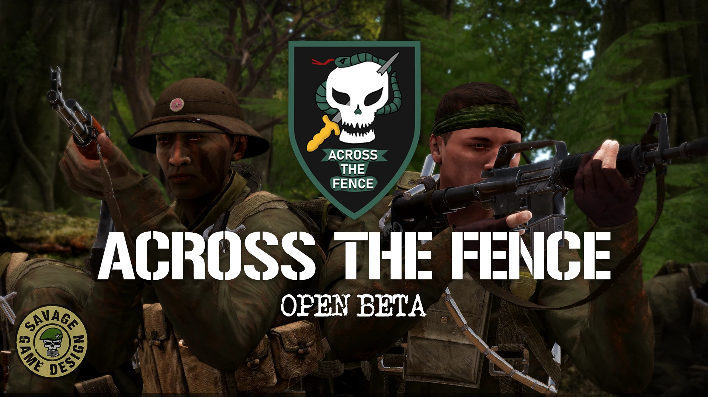
An overview trailer for the latest gamemode for S.O.G. Prairie Fire.
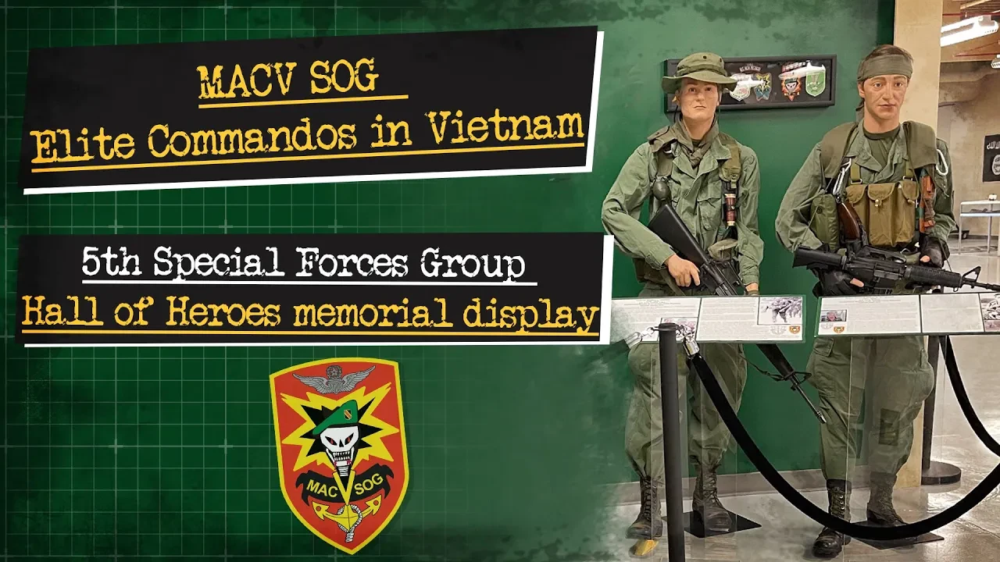
A historical overview of MACV-SOG combining historical photos and images with cinematic footage from S.O.G. Prairie Fire. Currently displayed at Ft. Campbell, KY.
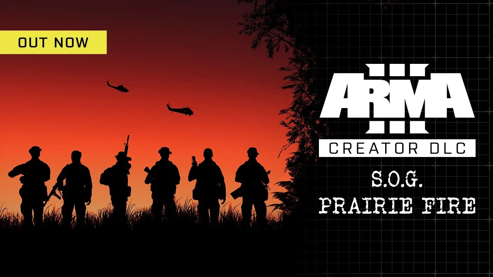
A fast-paced trailer showcasing S.O.G. Prairie Fire's authenticity and gameplay.
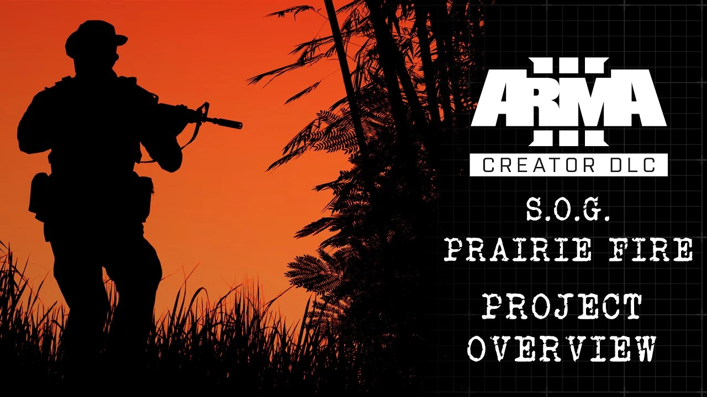
An overview of the S.O.G. Prairie Fire video game, built as a presentation to MACV-SOG veterans at a reunion in 2021.

A rare firsthand account from Bob Killebrew offers an inside look at the legend of Jerry “Mad Dog” Shriver and the realities of MACV-SOG operations in Vietnam.
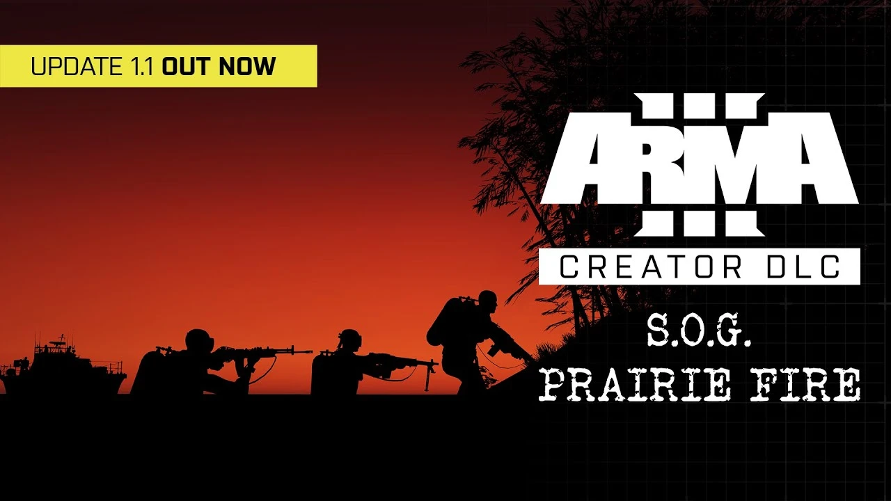
Showcases the first major content update for the game, including new weapons, gear, vehicles, and other content.

Title sequence for Vietnam War interview series - complete with motion graphics animations, music from S.O.G. Prairie Fire, and historical footage.
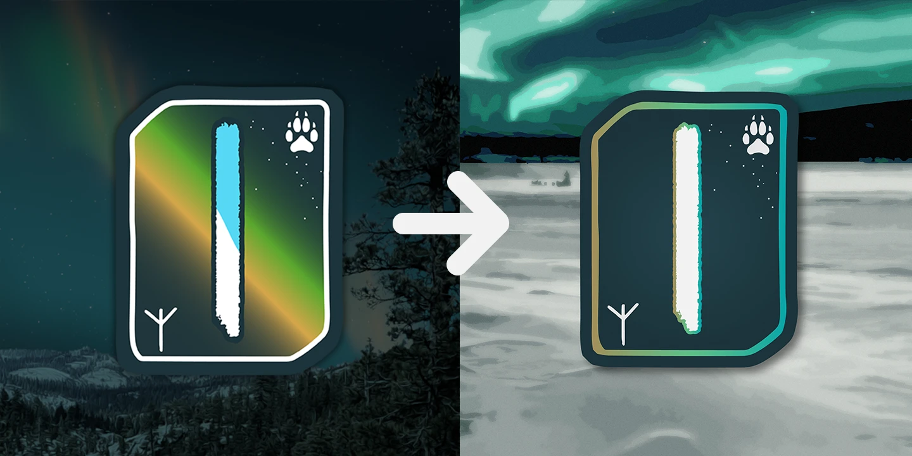
Design and refresh of my nordic brand identity for the NordAurora YouTube channel.
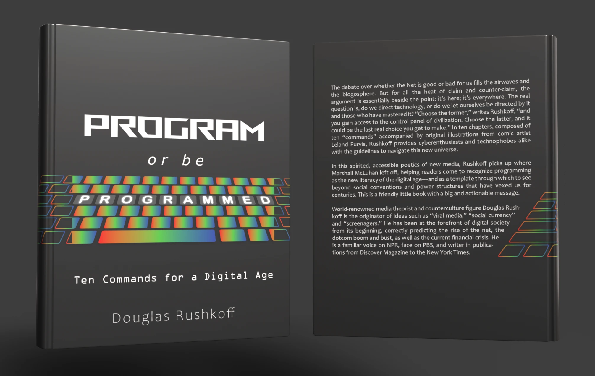
New book cover design for Douglas Rushkoff's Program or Be Programmed

Logo design for US Army Civil Affairs unit
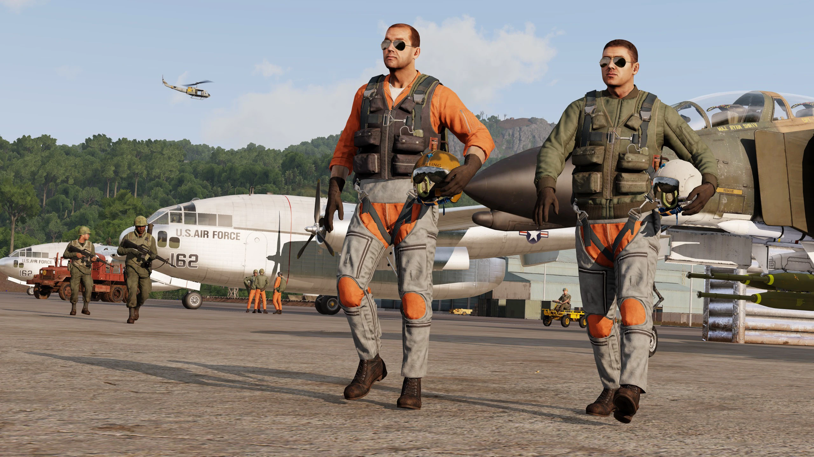
In-game screenshot of assets from S.O.G. Prairie Fire and S.O.G. Nickel Steel
Animated existing threesixty Journalism logo in Adobe After Effects to create smooth, natural, and polished motion graphics product.
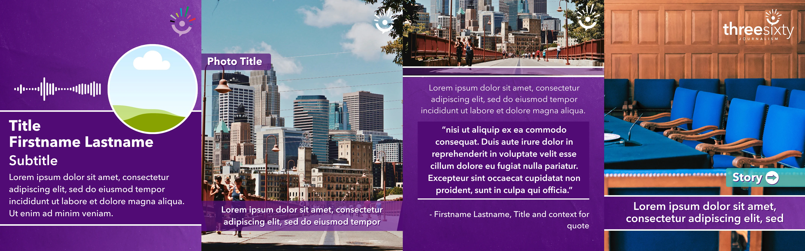
Instagram carousel templates created in Canva for threesixty Journalism.

Multiple animations I made for the Mississippi Watershed Management Organization, including of their logo and lower thirds. Motion graphics are one of my favorite types of work!

Rigged character animation created from existing logo
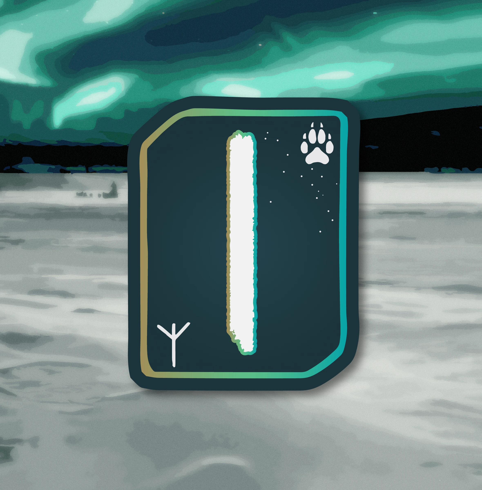
As someone with Nordic heritage, I have always been fascinated by the concept of runes that have a greater meaning beyond just a letter of the alphabet. I think this is an interesting concept, and it presents an interesting opportunity to embed further meaning within a design.
When creating the original logo for the IceTactics YouTube channel, which has now been renamed to NordTactics, I wanted to embrace my Nordic heritage by utilizing runes. After doing some research, I found two that I specifically related with: Isa and Algiz.
Isa is not only associated with ice, which I am able to relate to from living in the often frozen Northwoods of the Midwest, but is also associated with slowing down and assessing a situation, as well as discipline and introspection. After leaving the Army, I dove deep into my spirituality and connection to perspectives from many different religions and philosophers. I learned that taking time to slow down and just be present in the moment can be a key aspect to appreciating life. Time is relentless and is constantly flowing. For me, the Isa rune is a reminder to stop and appreciate the things around oneself.
Also featured within this logo is the Algiz rune, which appealed to me because of its association with protection and spirituality. The period of my life after getting out of the military was a deep period of spiritual reflection for me and a time to connect with elements of spirituality that I never expected to.
I also wanted to integrate imagery of the stars, as I have a deep fascination with astronomy and the sheer breadth and size of the universe. I took inspiration from Nordic constellations and found one that is connected to deer, an animal I have a deep connection with and respect for as a Minnesotan. This symbolizes both my love for astronomy and my love for the outdoors.
The pawprint signifies the timberwolf, an animal I also feel deeply connected to, as I have heard them many times while camping at night in the Northwoods. This animal also connects to my online community, Task Force Timberwolf.
I have many different variations of the Isa logo, and one that I wanted to focus on specifically updating for my latest brand refresh was the one for the Nord Aurora YouTube channel. This channel is less military themed and more about adventure themed and open world type video games.
The previous design featured a color scheme inspired by the Northern Lights, something that I have had the opportunity to see only a couple of times in my life, but has always been a deeply moving and surreal experience. For the new version, I wanted to carry this theme forward, but focus the colors into more of an accent than a primary color palette. I found that surrounding the border of the rune and the Isa rune itself with a gradient utilizing these colors worked well for this design. I kept the primary fill color as deep midnight blue, but integrated a radial gradient into the center of the logo to give it a subtle glowing effect.
For the background, I found a photo by Thomas Lipke of a dogsled convoy working its way through a Norwegian ice sheet under a beautiful sparkling aurora night sky. I removed the foreground dogsled team using Photoshop, then I applied image trace effects, texture, and a glow effect to the image in order to personalize it for this logo. The ice sheet allows for a nice contrast that allows the logo’s deep blue fill color to pop more effectively than the old design’s background photo from Yosemite National Park, which I had taken and modified to look like nighttime.
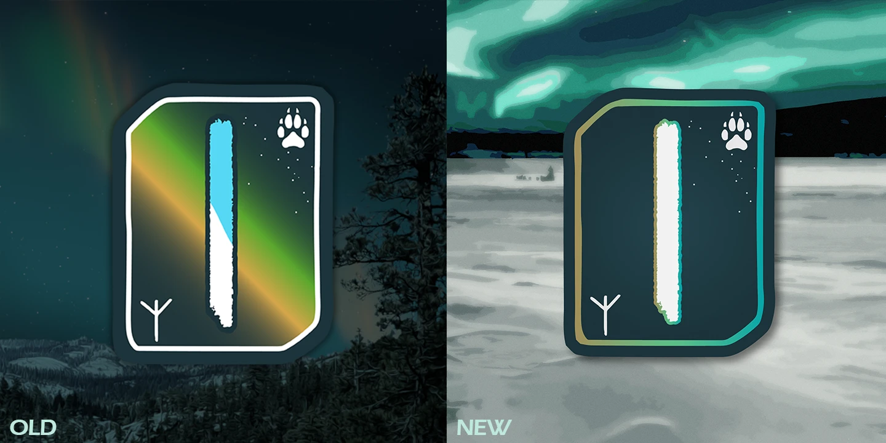
The aim of this class project was to hypothetically reimagine a currently published book’s cover. Program or Be Programmed by Douglas Rushkoff emphasizes the need to be technology literate in order to truly have independence in modern society. Having done a lot of programming myself and used many backlit RGB keyboards, I thought this would be a fun design concept to explore.
I wanted to specifically place emphasis on the word programmed, so I changed the keys to be fully filled in with a gradient of red, green, and blue within the area around the word, and cut this off for the areas outside of this, just making the keys outlined with the color.
Creating the keyboard asset was a challenge. In order to do this, I took a photograph of one of the keyboards in a computer lab on campus, then used Adobe Illustrator to trace the edges of each key. I then used a perspective warp tool to make the keyboard look as if it was at an angle. I was quite satisfied with the result.
Doing a book cover is also a fun opportunity to explore some unique perspectives since the cover wraps around both the front and the back of the book. Since the keyboard was wider than the front cover, I figured it would be fun to have it wrap around onto the back cover of the book as well.
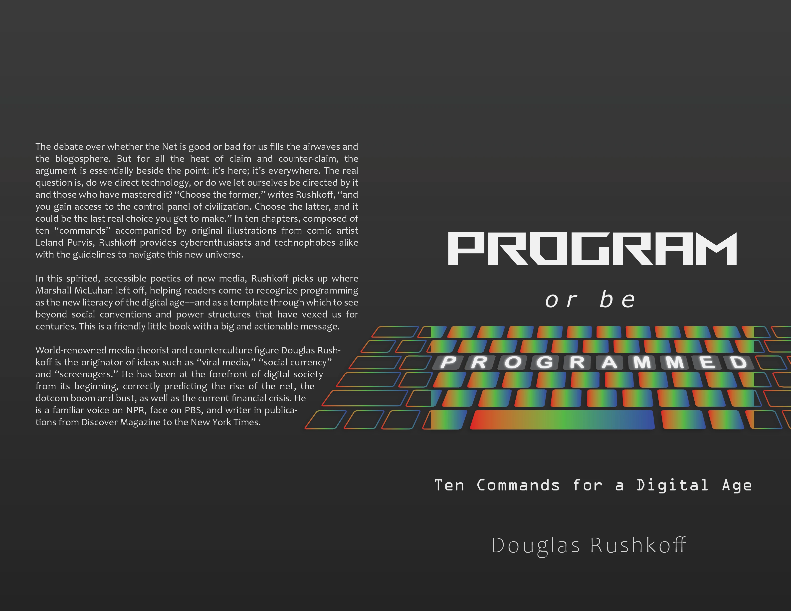
Being a veteran myself, I am always interested in helping out my friends who are still serving. One of my former Army buddies contacted me looking for help designing a logo for his unit.
This unit, nicknamed the “Defenders,” was a civil affairs unit, meaning connections with civilians and civilian industries like agriculture were very important. This unit is less about waging offensive combat and more about helping locals build infrastructure and maintaining positive public relations with civilians.
I did my best to integrate some of the imagery requested by the unit: the wheat, an olive branch as a sign of peace, and the rook chess piece in front of a shield symbolizing defense.
I also wanted to mimic the shape of a military tab, which can be earned like RANGER or SAPPER tabs, or is seen above military patches like AIRBORNE, with the word “DEFENDERS.”
This design ended up being printed on the unit’s T-shirts and letterheads, among other places. It serves as the main visual symbol representing the unit.
I also designed a single-color version that could be printed in black or white for use on stencils, gear, etc.

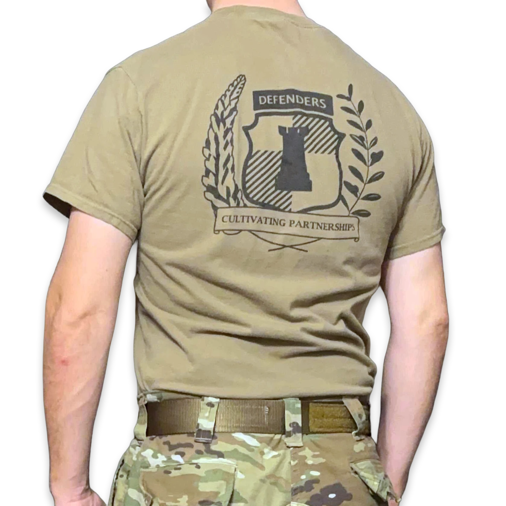
Many people think of photography as something that only happens in physical spaces. However, there are both professional and hobbyist photographers who create artwork within video games.
For one of our updates to the free S.O.G. Nickel Steel addon for our game S.O.G. Prairie Fire, I tried my hand at showcasing some of the new flight suits and jackets that our artists had created.
This involved selecting animations for the characters, placing them and many of the surrounding vehicles and characters, and creating a composition that is visually pleasing to the eye using the rule of thirds and vectors.
I will always look up to the legendary Whiplash, who creates incredible promotional artwork for our video game in this format. His screenshot work is unparalleled in Arma 3.
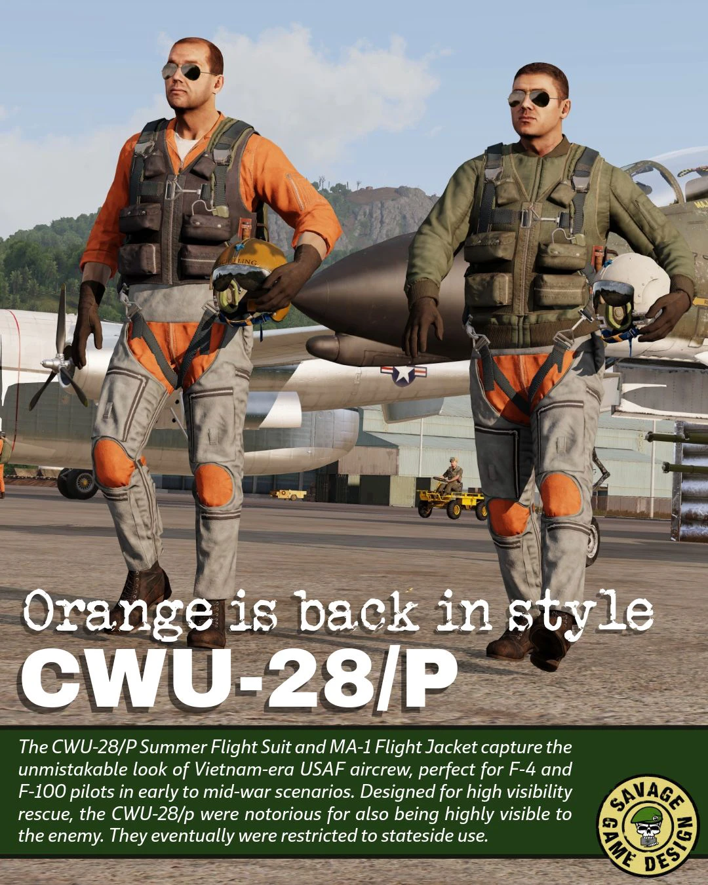
Of all the projects I have worked on with Team Savage, this is one of the most meaningful I have had the opportunity to be part of. Several summers ago, I undertook the task of transcribing a chaotic and lengthy audio recording of a top secret combat mission in Laos conducted by members of MACV-SOG. I began this independently in my free time, with only limited background from articles and a podcast featuring John Plaster, who served as a Covey rider on the mission.
In this role, he operated from the back seat of a forward air controller OV-10 Bronco, helping coordinate air support for two reconnaissance teams on the ground deep in enemy territory. The mission was highly unusual. Two separate teams, miles apart, were compromised at the same time. Plaster and his pilot, Mike Cryer, alongside supporting elements flying A-1 Skyraider, UH-1 Huey helicopters from the 57th Assault Helicopter Company, and AH-1G Cobra gunships from the 361st Aerial Weapons Company, worked to hold off a large enemy force long enough to extract both teams.
Early in the engagement, David “Lurch” Mixter of Recon Team Colorado was killed when an NVA rocket struck him after he pushed teammate Lyn St. Laurent to the ground, saving his life.
A tape like this is exceedingly rare, as the nature of SOG operations prevented any photographs or recordings of this nature. Still, some crew members on board a 57th AHC helicopter let the tapes roll as the battle raged in the air and on the ground. Team Savage received our copy from Barry Lewis Subelsky, and our audio engineer Dennis Kahl cleaned up the tape. We received permission from Plaster to include the recordings in our video game, S.O.G. Prairie Fire, as a way to connect players to the history and the real men who ran these missions.
The transcription process itself was demanding. The recording captured multiple overlapping radio transmissions with little context. I spent the summer listening repeatedly, working to identify voices, terminology, and the evolving battlefield situation. I received invaluable support from my friend and MACV-SOG veteran Don Haase, a former Huey crew chief, who helped interpret difficult segments and clarify operational details.
Years later, at a SOG reunion, I spoke with Colonel Barry Pencek, who connected me with Chief Warrant Officer 3 Woody Woodard, a Cobra pilot who had flown on the mission with the 361st in January 1971. After reaching out, Woody confirmed his involvement and invited me and our film specialist Paul Hildebrandt to his home. We spent an afternoon recording an interview and reviewing the original audio together. He was exceptionally generous with his time and insight, offering a deeper understanding of the air operations that shaped the mission.
Woody sadly passed away not long after, and this video was released in his honor. This project is intended to preserve and share the experiences of the aviators and recon teams involved, and to ensure their actions and sacrifices are remembered. I edited and assembled the footage from the interview and archival audio into the final piece, which we released on the Savage Game Design YouTube channel. We later had the opportunity to meet with Lyn St. Laurent for a similar recording, which is currently in production.
The technical elements of this project included preparing files and synchronizing a scrolling text transcript with the tape audio, setting up an audio interface, microphones, headphones, and recording equipment. Paul handled the camera work. I recorded the audio of our podcast to multiple storage devices to ensure we had a backup in case of any point of failure. The podcast is primarily intended for historical enthusiasts, but is also intended to help bring Vietnam War History to players of the S.O.G. Prairie Fire game.
This is an overview trailer of Savage Game Design’s latest game mode for S.O.G. Prairie Fire: Across The Fence. To record the footage, I accompanied our developer team and friends on a mission and used Arma 3’s ‘Bulldozer’ developer camera to capture the team conducting reconnaissance on North Vietnamese forces.
I deeply enjoy creating cinematics like this. One of the key factors was keeping the intro segment short, hard hitting, and exciting. I synchronized shots from a recorded gameplay session with music from the game, and I am proud of how it turned out. It helped to work with an expert group of players from our developer reconnaissance team, RT Columbia, many of whom have met in real life. I also wanted to capture the energy of the in-game hint system, in which our voice acting team gets to portray SOG Veteran team leaders giving tactical advice to the player on missions.
Across The Fence is based on the book of the same name by John Stryker Meyer, who serves as a military advisor for S.O.G. Prairie Fire. The game mode allows players to conduct recon missions as commandos during the Vietnam War, featuring unique progression and gameplay mechanics such as unlockable skills, realistic enemy tactics, and a constant sense of operating deep in enemy territory while heavily outnumbered.
Savage Game Design had the opportunity to contribute to a collaborative effort to create a museum exhibit focused on MACV-SOG, a highly-classified unit that conducted incredibly dangerous operations during the Vietnam War and pioneered many tactics, techniques, and procedures that would reach decades into the future of Special Operations history.
My role within the project was to help produce and narrate the video components of the display. I adapted our original release trailer for S.O.G. Prairie Fire, filmed and edited by the legendary FlawlessWarGamer, into a historical overview of MACV-SOG, revising the copy, adding new narration, using photos and video provided by our veteran friends, adding footage from our podcasts with veterans, and including historical videos from the national archives.
The intent was to help currently serving Special Forces soldiers understand the history and legacy of MACV-SOG. The video is displayed at the Hall of Heroes at Fort Campbell, home of the 5th Special Forces Group. I combined elements from our video game trailer with gameplay footage, historical footage, and audio elements to complete this project.
The display was a team effort, with contributions from many SOG Veterans, the Special Operations Association, the JFK Special Warfare Museum, USASOC and 5th SFG historians, Team Savage, and the Modern Forces Living History group.
You can view the display's unveiling here.
Using in game footage I captured for other Prairie Fire update trailers, along with gameplay sessions featuring members of Savage Game Design including myself, I produced a trailer highlighting S.O.G. Prairie Fire’s focus on simulation, authenticity, and cooperative gameplay within Arma 3.
My goal was to create a trailer that was visually engaging, fast paced, and exciting, while clearly reflecting our team’s passion for the project. I collaborated with Team Savage marketing specialist Mike, who put together the ending animation and helped with subtitles.
This video was created to introduce veterans of MACV-SOG at the 2021 Special Operations Association reunion to the S.O.G. Prairie Fire project. From the outset, Savage Game Design’s mission has been to preserve history and honor the real people and sacrifices behind the highly classified Secret War in Laos, Cambodia, and North Vietnam from 1965 to 1972.
A primary goal was to communicate that respect and authenticity to an audience that included veterans, as well as their families and close friends. I focused on conveying both the historical weight of the subject and our team’s commitment to telling these stories with care and accuracy. I also wanted to feature some reactions and reflections on the game from our veteran advisor team and footage from podcasts we have hosted. I handled narration, editing, and storyboarding for the video, and collaborated with the team on additional production elements.
I created this before having any formal training in video editing or media.
As part of my historical work with Savage Game Design, I have had the opportunity to speak with veterans and help share their stories with a wider audience. Through our advisor Ken Bowra, we were connected with Bob Killebrew, whom I had the privilege of interviewing.
One of the most well known figures in MACV-SOG history is Jerry “Mad Dog” Shriver. Known for his intensity, fieldcraft, and deep connection with his Montagnard teammates, Shriver became a legendary figure after disappearing on a mission and never being recovered.
Colonel Killebrew served alongside Shriver and used this interview to share personal stories and reflections from that time. His perspective provides a rare firsthand window into the culture, relationships, and operational realities of SOG, as well as a more human understanding of one of its most enduring and mysterious figures. It was a unique opportunity to help document these experiences and a privilege to spend time hearing them directly.
I screen-captured this video using Zoom and OBS, then edited it with Premiere Pro. I also planned the interview questions beforehand. The podcast is primarily intended for historical enthusiasts, but is also intended to help bring Vietnam War History to players of the S.O.G. Prairie Fire game.
It was a great honor to get to speak with Col. Killebrew, who also invited us to meet him in person for a second interview. This conversation was a stark reminder of the danger behind SOG missions. Many men never returned home. We should remember and honor their memory.
For this update trailer for S.O.G. Prairie Fire, I led storyboarding, in game filming and narration, while our film specialist Paul Hildebrandt spearheaded the editing and brought the final piece together with additional in-game footage. Working within Arma 3 and alongside Savage Game Design, this project was a collaborative effort focused on presenting new content in a clear and engaging way.
The goal was to generate excitement within the player base by highlighting new gameplay opportunities, including diver team operations, the introduction of civilian vehicles, and additional weapons.
My favorite shot in the trailer is the underwater diving team - it shifts from a view above the water at a PAVN navy dock to an underwater view showing underwater divers.
Fellow voice actor "Punisher" and other members of the team helped out with filming by playing characters in scenes in-game - we had some fun with this! Audio engineer Dennis Kahl produced custom audio stems for the project too, making it even more cohesive.
S.O.G. Prairie Fire Stories is a series of podcast-style interviews featuring Vietnam War Special Operations veterans. I helped plan and host the series alongside Team Savage CEO Rob Graham. In late 2025, I storyboarded and produced a title sequence using Adobe After Effects and Adobe Premiere Pro.
The sequence incorporates historical footage from the National Archives, as well as footage captured by S.O.G. Prairie Fire veteran advisors Don Haase and Jim Shorten-Jones during their service. It also includes music from the game’s soundtrack and historical maps from the University of Texas Libraries. Radio communications used in the sequence are authentic recordings from pilot Ray Belz and a January 1971 tape provided by John Plaster and Barry Subelsky.
My process began with detailed storyboarding, with a focus on capturing the visual tone of the Vietnam War era. The goal was to help audiences better connect the stories shared in the podcast with the historical reality of the conflict.
I utilized keyframed animation techniques to mask and modify elements, applying motion, texture, and synchronization with the music track to create a cohesive sequence.
The sequence features a rigged character based on the Team Savage logo. Starting from a layered Adobe Photoshop file, I separated elements into individual layers within After Effects. I then animated the logo to expand outward into a shellburst effect, with the monitor entering from the left and being crushed by the skull. I revealed the cracking effect by keyframing a mask path. Motion was refined using custom-timed keyframes, allowing elements to slightly overshoot and settle into place to simulate weight and realism.

The “REAL STORIES” stencil sequence was the most technically complex portion, requiring multiple layers and precompositions to properly render textures and effects. To achieve an authentic look, I recorded spray paint strokes in Photoshop and integrated that footage into the composition.

The 3D “REDACTED” map sequence reflects the classified nature of MACV-SOG operations. Personnel involved in these missions were restricted from discussing them for decades. I used a CIA Atlas map from the University of Texas Libraries and keyframed 3D camera movements to create depth and motion. I also recorded custom marker sound effects and synchronized them and public domain typewriter audio with the animations. I used a screencapture of photoshop brushes to create the marker animations, then used a Luma key to remove the white photoshop canvas.
The archival footage includes a range of sources, such as ranger patrols and equipment demonstrations. Two sequences stand out as authentic MACV-SOG footage: the Marble Mountain footage by Jim Shorten-Jones and the “string” extraction footage by Don Haase, featuring a SOG team being extracted on ropes hanging from a UH-1H helicopter.

For the Marble Mountain segment, I created a hand-drawn illustration inspired by period news program visuals. I photographed the drawing, inverted the colors in After Effects, and applied a luma key to isolate the image. A looping turbulent displace randomized motion expression was added to replicate the subtle movement seen in period overlays.

The soundtrack required custom editing to achieve the desired pacing. I spliced sections of “Fire in the Sky” from the S.O.G. Prairie Fire soundtrack by aligning cuts with audio transients, allowing for a natural flow while preserving the intended tone. The track, created by originalsas, has also been used in other productions by our team.
I was pleased with the final product! It may still see further modifications for future iterations.
For this project, I animated the existing threesixty Journalism logo using Adobe After Effects. The primary objective was to create smooth, polished motion that felt natural and professional. To achieve this, I used carefully timed keyframes with subtle overshoots in position, scale, and rotation before each element settled into its final state. This approach added a sense of weight and momentum, resulting in a more dynamic and refined animation.
These Instagram templates were designed in Canva for threesixty Journalism, focusing on brand consistency and platform specific design needs. Working in Canva provided an opportunity to expand beyond Adobe Express, with experimentation in text animation, texture, and layout while aligning with established brand guidelines and adapting to client needs based on prior content and feedback.
This project was a fitting application for the motion graphics course I took at school. The Mississippi Watershed Management Organization, which manages the watershed around much of the Twin Cities area, had recently undergone a brand refresh and needed reusable, dynamic assets for future media production.
Motion graphics are a great way to create visually appealing media while also helping the audience understand and retain information.
We identified a need for video end cards that could tie together the beginnings and endings of MWMO short and long form videos. The new MWMO logo was a strong foundation for this because it is memorable, clearly identifiable, and built from clean visual elements with minimal overlap.
We also identified a need for lower thirds to help audiences understand information presented in video form. Accessibility is especially important for government organizations, so these animations needed to be simple, clean, and easy to read. The lower thirds could define specialized terms for viewers while also identifying key personnel and their job titles.
This focus on accessibility allows video productions to have a greater reach. Since a large portion of the target audience of Twin Cities residents may not have a background in environmental science more easily understand the information presented in these videos.


I started with a series of storyboard sketches, which eventually evolved into the final animation package. For the tagline and text animation in the end cards, I used the speed graph functionality in Adobe After Effects to create a smooth sliding effect.
The result is a smooth, professional animation package that helps unify MWMO video content under a consistent visual identity.
These animations were successfully used in several video productions made by classmates, and they are modularly set up as Premiere Pro motion graphics templates so the client can use them in future projects as well.
This is a rigged character - a combination of connected shapes and layers that interact with one another to form an animation - based on the Team Savage logo. Starting from a layered Adobe Photoshop file, I separated elements into individual layers within After Effects. I then animated the logo to expand outward into a shellburst effect, with the monitor entering from the left and being crushed by the skull. I revealed the cracking effect by keyframing a mask path. Motion was refined using custom-timed keyframes, allowing elements to slightly overshoot and settle into place to simulate weight and realism.